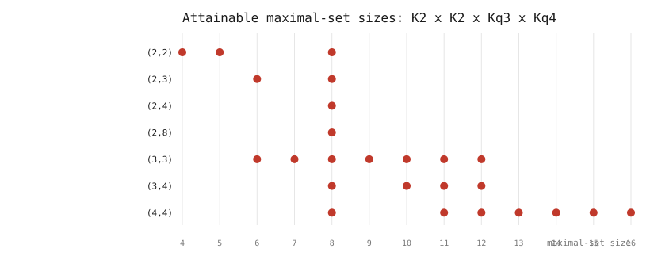

A / 容量与计数
128 种亮灭组合，哪些能一起使用？
在经典七段、四个方向任一侧的理想边框遮挡下，最大无歧义集有 32 种图案。它是数学容量，不是可读字体的字符数。更小的“极大集”只是按当前选法不能再加，大小可以是 16 或 19–32；不存在大小 17、18 的极大集，但可以有尚能扩充的 17 字符集合。
604,008每个固定中段状态的极大集数量
364,825,664,064全局极大集数量

它原来是……
知道哪里没看见。
我们称之为擦除。
不知道哪里出了错。
这比遮挡更难。
图案彼此不同，
也未必像我们熟悉的数字。
先分清问题，
才知道怎样设计答案。
02 / 从需求到字形，一步一步设计
先决定屏幕能画什么，再决定要表达什么。
每一次修改，都会重新验证你的整套设计。
格子是绘图骨架，线段才是可独立控制的硬件。选好尺寸后，可以把任何一根不需要的线关掉。
经典七段屏对应 1 列 × 2 行格子，也就是 2 列 × 3 行顶点。增加格子或斜线后，不再受固定七段布局限制。每个方向可设 1–11 格；一次最多 128 根候选线段，超出时会保留原画布。
亮线 = 存在的硬件 虚线 = 已移除
点线段切换硬件；这一步不编辑任何字符。
预设只是把字符加入备选池。点选单个字符，决定这一版字库究竟需要哪些；也可以加入自己的符号。
“能恢复”比“不会静默误读”更严格。你可以要求浅遮挡时唯一恢复，遮得更深时至少能发现异常；四个方向的深度可以各不相同。
线宽按 0 处理，绘图留白不计入比例。0% 不遮挡；只要大于 0，最外侧边就不可见；50% 时恰在中线上的段也不可见，遮挡包含前沿边界。百分比表示从所选边缘向内伸入的画布宽度 / 高度，不表示事件发生概率。几何上真实裁切线段；只有整段完全不可见时才擦除其信息位，残留任意非零长度仍按可分辨处理。可在反例中查看几何残留。故障预算是“至多 N 个独立发光段”，可填 0 到当前启用的段数，包括零故障，位置未知；未建模真实公共引脚及电路级联。故障在本来不亮或已被遮住的段上可能不可察觉，所以“检测”只保证不误读成另一个完好字符。
所有启用规则都必须满足。一次验证检查段位模型中的临界观测，而非随机取样；超出计算预算会显示“未完成”，不会当作通过。
没有碰撞的图案，可能已经不像数字。我们用独立字形模板生成期望形状；你也可以单独编辑目标，再让实际字形尽量接近它。
点目标画布里的线段，只改变这个字符的期望。实际字形保持不变。
这些权重是设计模型，不是测量出的人类正确率。黄色表示偏离期望，不等于用户一定认错；最接近哪个目标、连通分量与洞的变化都会在最后一步分开解释。
点卡片选择字符。硬件在第一步修改，字形在这里修改；两者不会混为一谈。
用当前画布、字符、规则与期望现场搜索
先满足硬约束，再尽量像你希望的样子。允许比较不同候选；找不到时会如实保留未解决的冲突。
尚未搜索。参考解将根据你的当前设计计算，不是切换固定预设。
当前设计仅在此页；可保存本机，或导出完整设计继续探索。
03 / 实验之后，研究还走了多远
有些结果能直接变成按钮，另一些需要证明与枚举。
这里把数学、设计与感知证据放回同一张地图。
在经典七段、四个方向任一侧的理想边框遮挡下，最大无歧义集有 32 种图案。它是数学容量，不是可读字体的字符数。更小的“极大集”只是按当前选法不能再加，大小可以是 16 或 19–32；不存在大小 17、18 的极大集，但可以有尚能扩充的 17 字符集合。
中间一段 g 永不被边框遮挡，因此问题分成两个独立副本。固定 g 后，用上边、下边、左两段、右两段作为四组坐标，冲突图就是 K₂ □ K₂ □ K₄ □ K₄。前两组组成四个格子，每格选择一个二分图匹配；相邻格子的选择还必须避免共享边，并覆盖剩余的洞。
逐格大小的可行组合给出了精确构造语法，9 / 10 的局部缺口由此出现。非 well-covered 只说明极大集不全一样大，不能单靠这一点推出具体缺口。
查看四格匹配与可行大小表 ↗混合 Hamming 图不局限于七段显示。对 Kq₁ □ … □ Kqᵈ，按 q₁ ≥ q₂ ≥ … ≥ qᵈ ≥ 2 排序，当且仅当 q₁ > Σᵢ≥₂(qᵢ − 1) 时，每个极大独立集都是最大集。这个判据已有证明与计算核对；是否为新结果仍需要文献查新。

像素网格的边角同时属于两个遮挡方向，因此不再是这个简单乘积。项目已支持一般冲突图；3 × 3 像素最大容量为 64，最小极大集仍报告界限，不把未完成搜索说成定理。
证明、广义族与开放问题 ↗项目比较完整形状、遮挡后形状、几何拓扑（连通分量与洞），以及它是否最接近自己的标准字形。四段修改候选通过七段四向遮挡，仍改变了 8 的孔洞结构；只保留拓扑甚至能得到一个难以阅读的 30 段修改方案。
遮挡后匹配不是附属项：改变一个字形，也会改变人们预期它在遮挡后留下的样子。这里的权重仍是暂定模型；平均分还可能掩盖某个特别差的字形，所以实验台给出逐字解释。
十六进制还有更强的限制：在现有七段四向模型和该最近标准距离定义下，不存在让 0–F 全部保持唯一最近标准的字库，最少仍需一次违反。这是具体模型下的不可行性结果，不是对所有人类识别方式的证明。
拓扑、最近标准与字体 Pareto 记录 ↗已知遮挡位置是擦除，未知坏段位置是错误。在经典边框模型中，仅左右任一侧遮挡的容量仍是 32；左右同时遮挡则降为 8。再允许至多一段坏灭，只要求不误认成另一个完好字符时容量是 16，要求唯一恢复则只有 6。
一个建设性方案是把 Hamming 冗余放到遮挡后仍可见的内部段。它展示了增加结构能换来什么，但不自动成为人眼易读的字体。自由画布中的百分比是新的几何模型，必须重新计算，不能直接套用边框模型的容量数字。
完整故障模型、容量表与纠错构造 ↗一个好问题，可以长成很多种设计